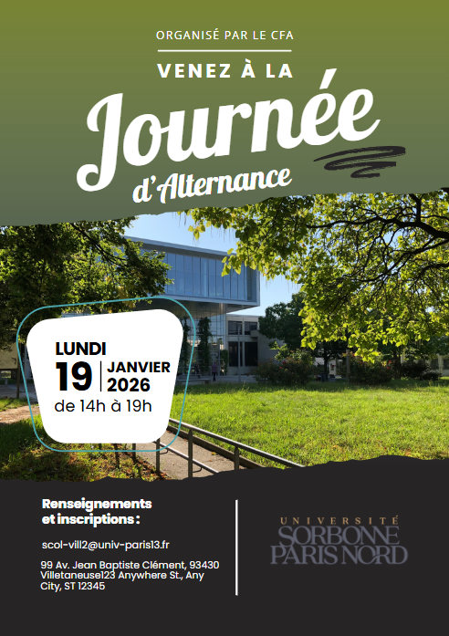

SAÉ 2.05 · BUT1 · S2
Recherche d'alternance
Projet d'équipe pour préparer la recherche d'alternance professionnelle

Informations clés
Période
Février — Juin 2025 · BUT1 S2
Équipe
Travail en équipe (5 étudiants)
Compétences BUT
Conduire un projet Collaborer
Technologies
Outils bureautiques · CV · Lettre de motivation · LinkedIn
Le projet en bref
SAÉ orientée projet professionnel : préparer en équipe sa recherche d'alternance. Concrètement : CV, lettre de motivation, profil LinkedIn, journal de bord des candidatures, affiche de projet, et soutenance finale.
Le travail en équipe nous a permis de nous relire mutuellement, de comparer nos stratégies, et de mutualiser nos retours d'entreprises contactées.
Comment ça s'est déroulé
Lancement du projet
Constitution de l'équipe, répartition des tâches, planification.
Production des supports
Chacun travaille son CV et sa lettre, puis revue croisée.
Démarches actives
Identification d'entreprises cibles, premiers envois, premiers retours.
Synthèse et soutenance
Affiche du parcours, présentation orale du processus.
Mon avis personnel
SAÉ qui paraissait administrative au début, mais qui s'est révélée vraiment utile.
Le simple fait d'écrire un journal de bord de mes candidatures m'a permis de comprendre ce qui marchait
ou pas dans mes démarches. Sans cette préparation, je n'aurais sans doute pas obtenu mon stage chez
Marchés BTP — qui est venu d'un contact LinkedIn que j'ai approché précisément avec les techniques
travaillées ici.